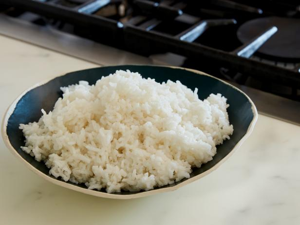

How to make Steamed Rice

Description
This is a Bengali style Steamed Rice simple, yet fueling 99% people of Bangladesh everyday.
Ingredients
- Rice 500 G
- A big pot
- Water
- Pinch of Salt
Steps
- Rinse the rice until clean
- Add clean water until there is a 1 inch gap between rice and water
- Put on high flame until it comes to boil
- After that put it on medium flame for 20 minutes and it is ready!